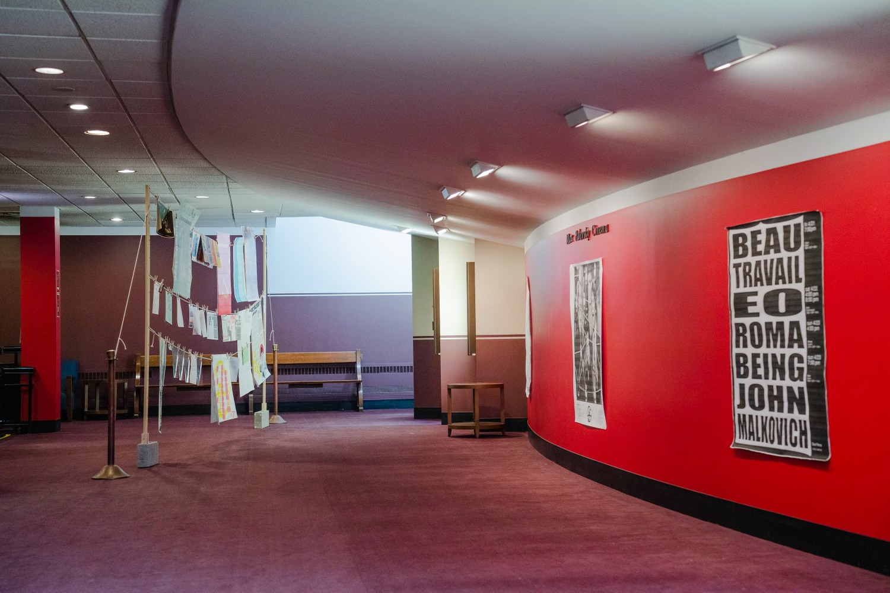

ELI HARRELL
Archival Print Exhibition
a hand ~ 3D project
DOCUMENTS exhibited archival print materials in the lobby of the Max
Palevsky Cinema, emphasizing the insistent importance of physical media today,
both the celluloid the cinema projects on, and the paper it uses to present
itself. Read the full text.
Barred from affixing anything to the site's walls, this exhibition required
its own freestanding structure to hang the selected materials, which were
printed on both sides. In addition to doubling the wall's capacity, its freestanding
nature enabled repositioning the exhibit to make the most of difficult fixed lighting.
Exhibition photography by Hannah Yang.
click images to view them at full size.
| The exhibit. |
 |
| Clothesline and clothespins suspended materials of many sizes. | |
| Beam with modular hanging heights. |